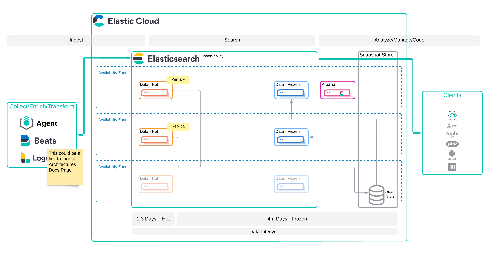

Reference Architectures
editElasticsearch Reference Architectures serve as essential blueprints for deploying, managing, and optimizing Elasticsearch clusters tailored to different use cases. These architectures provide standardized, proven solutions that guide users through best practices for infrastructure setup, data ingestion, indexing, search performance, and high availability. Whether you’re handling logs, metrics, or sophisticated search applications, these reference architectures ensure scalability, reliability, and efficient resource utilization. By leveraging these guidelines, organizations can confidently deploy Elasticsearch, achieving optimal performance while minimizing risks and complexities.
You can host Elasticsearch on your own hardware or send your data to Elasticsearch on Elastic Cloud or serverless.
Time Series
edit- Time Series HA Architecture: Multi-Region With Two Datacenters
- Two Availability Zone with … Architecture
- Three Availability Zone with … Architecture
Cloud Architectures
editTime Series - Option 2
edit| Architecture | Use when |
|---|---|
Time Series HA Architecture: Multi-Region With Two Datacenters
|
You want to:
|
Elastic Cloud Hot-Frozen Architecture  |
You want to:
|

Ingest Architectures
editAdditionally, we have architectures specifically tailored to the ingestion portion of your architecture and these can be found at, Ingest Architectures